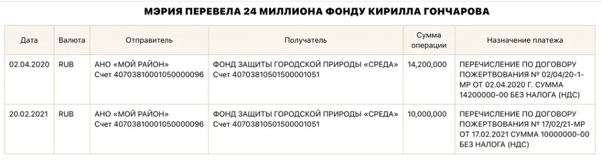
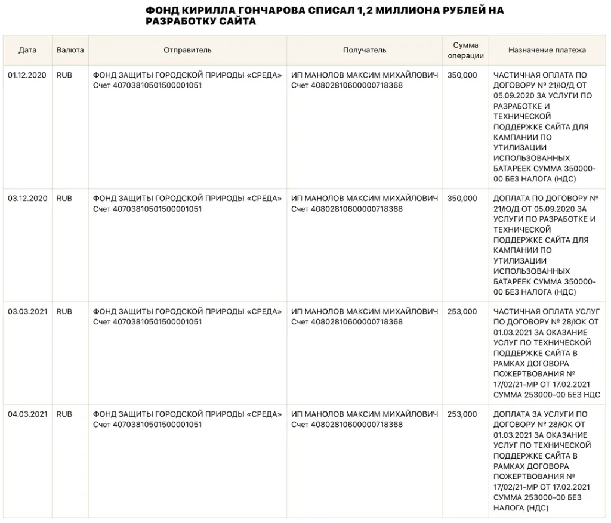
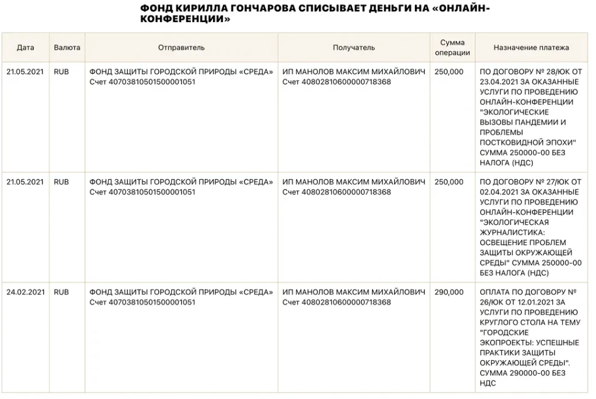
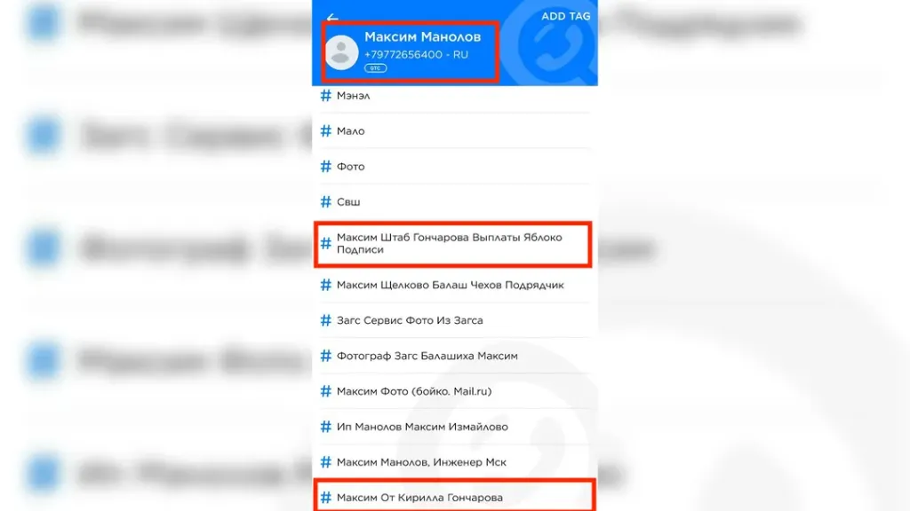
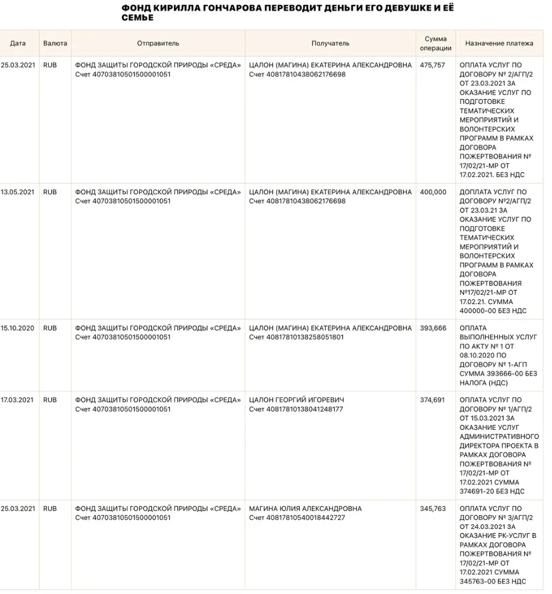
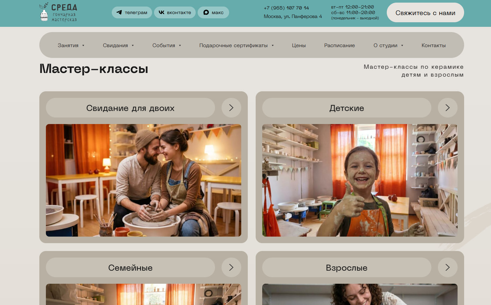

СПЕЦРАССЛЕДОВАНИЕ ЧТО СЛУЧИЛОСЬ И ПОЧЕМУ: ПОЛНЫЙ РАЗБОР
В современной России независимая политика уничтожена: Илья Яшин получил 8,5 лет заключения, муниципальный депутат Алексей Горинов (1961 г.р.) — 7 лет за антивоенную реплику, Владимир Кара-Мурза — 25 лет строгого режима (Яшин и Кара-Мурза провели годы в тюрьме до международного обмена в августе 2024 года). А близкий соратник нашего героя, экс-глава фракции «Яблока» в Мосгордуме Максим Круглов, осенью 2025 года отправлен в СИЗО по статье о «военных фейках».
И на этом выжженном поле уже 15 лет благоденствует 34-летний юрист Кирилл Алексеевич Гончаров. Он ходит в безупречных итальянских костюмах, заседает в эфирах федерального телеканала НТВ, возглавляет столичное отделение партии «Яблоко» является заместителем председателя федеральной партии «Яблоко» и одним из ключевых публичных лиц на предстоящих выборах. За 15 лет бурной «оппозиционной» деятельности у него ноль уголовных дел и всего 10 суток административного ареста.
Ответ дают официальные документы Федеральной налоговой службы, Росприроднадзора, портала госзакупок и судов г. Москвы. Кирилл Гончаров — это не борец с режимом. Это высокооплачиваемый системный подрядчик мэрии Москвы, чья задача — сливать протестные голоса на выборах, уничтожать внутрипартийную демократию и создавать для Кремля фальшивую витрину «разрешенного либерализма».
Летом 2019 года в Москве прошли массовые протесты против недопуска независимых кандидатов в Мосгордуму. Мэрия Сергея Собянина и вице-мэр Анастасия Ракова осознали: прямой подкуп и наем карманных «оппозиционеров» стоят куда дешевле, чем разгоны сотен тысяч людей на улицах.
Для тайного финансирования лояльных медиаперсон и политиков была задействована программа «Мой район». Чтобы не светить расходы в официальном казначействе и обойти жесткий федеральный закон о госзакупках (44-ФЗ), мэрия создала специальную «прокладку» — АНО «Мой район» (ОГРН 1187700020925, ИНН 9710070873, юрадрес: пер. Вознесенский, д. 22). Автономная некоммерческая организация имеет право раздавать миллиарды рублей без открытых тендеров, без согласования с Федеральной антимонопольной службой и без уплаты налогов (согласно статье 251 Налогового кодекса РФ).
Спустя три недели после выборов в Мосгордуму, 30 сентября 2019 года, Кирилл Гончаров лично регистрирует Фонд защиты городской природы «Среда» (ОГРН 1197700014490, ИНН 7736324409) по юридическому адресу: ул. Панфёрова, д. 16, корп. 1, комн. 55 (являющемуся адресом массовой регистрации по данным сервиса «Прозрачный бизнес» ФНС России).
Спустя всего несколько месяцев в никому не известный фонд Гончарова из кормушки мэрии потекли казенные миллионы двумя прямыми траншами:
- Транш № 1 (весна 2020 г.): 14 200 000 рублей;
- Транш № 2 (осень 2020 г.): 10 000 000 рублей;
- ИТОГО: 24 200 000 РУБЛЕЙ чистых бюджетных денег.

Официально Гончаров объявил, что фонд создан для «спасения природы Москвы и сбора токсичных использованных батареек в подъездах жилых домов». Но это была наглая ложь для прикрытия:
По законам РФ использованные аккумуляторы и батарейки относятся ко II и III классам опасных токсичных отходов (свинец, кадмий, ртуть, щелочи). По законам № 89-ФЗ и № 99-ФЗ любая организация, которая собирает, перевозит или утилизирует батарейки, обязана получить государственную лицензию Росприроднадзора.
Официальная проверка реестров Росприроднадзора показала: у фонда «Среда» НЕТ и никогда не было лицензии на опасные отходы. У фонда нет договоров с крупнейшим в стране специализированным заводом по переработке батареек («Мегаполисресурс» в Челябинске) и нет контрактов с федеральным оператором «Росатома» (ФГУП «ФЭО»). Если бы Гончаров реально собирал и возил батарейки тоннами без лицензии, это было бы прямым уголовным преступлением по ст. 8.2 КоАП РФ, ст. 247 УК РФ и ст. 171 УК РФ.
Однако Гончаров быстро осознал юридические последствия: заявить сбор 6 тонн опасных токсичных химических отходов (II–III класса) и их транспортировку через полстраны (1800 км) при полном отсутствии лицензии Росприроднадзора и при нулевых официальных расходах на завод в налоговой отчетности — это явка с повинной по ст. 171 УК РФ («Незаконное предпринимательство») и ст. 159 УК РФ («Мошенничество»). Испугавшись проверки силовиков, Гончаров в панике удалил пост из своего телеграм-канала (факт признания успело зафиксировать издание «Новая газета Европа»).
По закону о некоммерческих организациях бюджетный грант нельзя просто снять в банкомате или положить себе на карту — к концу финансового года фонд обязан обнулить баланс в отчетах Минюста. Деньги требовалось срочно и чисто «отмыть» через фиктивные услуги.
Для этого на сцену выходит ключевой партнер Гончарова — Алексей Игоревич Крапухин (ИНН 773175961325). Крапухин — член Регионального совета и Бюро Московского «Яблока», экс-кандидат партии в Мосгордуму и Госдуму. Именно Крапухин выступал публичным спикером и «исполнительным директором» фонда «Среда» на официальном канале проекта, в то время как по ЕГРЮЛ 100% владельцем и президентом фонда являлся сам Кирилл Гончаров.
16 марта 2020 года — день в день, когда в мэрии Москвы финализировались документы по перечислению первых 14,2 млн рублей в фонд «Среда», — Алексей Крапухин регистрирует собственную фирму: ООО «АПРА» (ОГРН 1207700120154, ИНН 9728000997).
• 18.12 — Прочие виды полиграфической деятельности (печать агитационных газет и буклетов);
• 70.21 — Деятельность в сфере связей с общественностью (PR);
• 70.22 — Консультирование по вопросам управления (консалтинг);
• 73.11 — Деятельность рекламных агентств;
• 73.20 — Изучение общественного мнения и социологические замеры.
Механика вывода средств заработала как швейцарские часы:
1. Штабной казначей под видом «веб-разработчика» (ИП Манолов): На расчетный счет индивидуального предпринимателя Манолова Максима Михайловича (счет 40802810600000718368) фонд Гончарова перевел почти 2 миллиона рублей (1 996 000 руб.):
• 1 206 000 руб. — списано за разработку и техподдержку сайта sredafond.ru (договоры № 21/Ю/Д и № 28/ЮК). Напомним, что на сайте за 1,2 млн висел шаблон на Тильде с логином test@email.com и паролем «123»!
• 790 000 руб. — списано за фиктивные «онлайн-конференции по экологии» и «круглые столы», оказавшиеся обычными звонками в Zoom на 4 лайка.
Анализ записных книжек GetContact вскрывает реальную роль Манолова: он записан у сотен активистов как «Максим Штаб Гончарова Выплаты Яблоко Подписи» и «Максим От Кирилла Гончарова»! Манолов — это казначей избирательного штаба Гончарова, который раздавал наличные за сбор подписей на выборах. Экологические субсидии мэрии шли прямо на покупку подписей избирателей!



2. Семейный подряд: переводы девушке Гончарова и её семье: Еще почти 2 миллиона рублей (1 989 877 руб.) Гончаров вывел прямыми переводами на личные банковские карты своей девушки Екатерины Цалон (Магиной) и членов её семьи:
• Цалон (Магина) Екатерина Александровна: 1 269 423 руб. (платежи от 15.10.2020, 25.03.2021, 13.05.2021) за «волонтерские программы» и «тематические мероприятия»;
• Цалон Георгий Игоревич: 374 691 руб. (17.03.2021) в качестве «административного директора проекта»;
• Магина Юлия Александровна: 345 763 руб. (25.03.2021) за фиктивные «PR-услуги».

3. Вывод на структуры Крапухина (ООО «АПРА»): Оставшаяся львиная доля средств (более 15 млн рублей) была выведена через договоры на социологию и полиграфию с фирмой соратника Гончарова Алексея Крапухина.
2. Оставшиеся 5–6 миллионов рублей фонд списал на административно-управленческие расходы: аренду офиса на Панфёрова и официальную зарплату самого директора Гончарова.
3. «Экологические» деньги мэрии превратились в неконтролируемый наличный капитал: теневой бюджет для личного обогащения и подготовки избирательной кампании Гончарова в Госдуму 2021 года.
В сентябре 2021 года наступил момент, ради которого мэрия Москвы и Старая площадь вливали миллионы в Гончарова. Проходили выборы в Государственную думу VIII созыва.
В Кунцевском одномандатном избирательном округе № 197 (охватывающем районы Кунцево, Раменки, Дорогомилово, Фили-Давыдково, Крылатское) власть оказалась на грани катастрофического фиаско. Кандидатом от «Единой России» и мэрии шел одиозный ведущий пропагандистского шоу «60 минут» на телеканале Россия-1 Евгений Попов. Против него мощную народную кампанию вел преподаватель МГУ, математик и профсоюзный лидер Михаил Лобанов (КПРФ), которого поддержало «Умное голосование» и широкая оппозиционная коалиция.
В ходе кампании кандидат от власти Евгений Попов столкнулся с ожесточенным сопротивлением в Кунцевском округе со стороны Михаила Лобанова. В условиях жесткого протестного голосования ключевым фактором победы кандидата мэрии стало распыление голосов демократического электората, роль которого сыграло выдвижение Кирилла Гончарова.
• Отказ от координации: Несмотря на призывы независимых аналитиков и социологов объединить усилия ради победы над административным кандидатом, Гончаров принципиально отказался от снятия в пользу Лобанова как сильнейшего кандидата оппозиции, критикуя КПРФ.
• Политический эффект: Кампания Гончарова мобилизовала либеральную аудиторию западных районов Москвы (Кунцево, Раменки, Крылатское), однако в условиях мажоритарной системы эти голоса не позволили победить ему самому, но отняли критически важные проценты у Лобанова.
• Аномальный бюджет: Официальный избирательный фонд Гончарова превысил 8 миллионов рублей (по данным Мосгоризбиркома и Сбербанка), будучи сформированным за счет партийных структур и сторонних юрлиц, в то время как личный доход кандидата по декларации составлял всего 152 400 рублей за весь 2020 год.
Математика итоговых протоколов ЦИК РФ и Мосгоризбиркома раскрывает суть предательства:
| Кандидат | Субъект выдвижения | Голоса избирателей | Процент | Реальная роль в кампании |
|---|---|---|---|---|
| Попов Евгений Георгиевич | «Единая Россия» (ВГТРК «60 минут») | 80 894 | 35,15% | Кандидат мэрии. Победу натянули ночным вбросом ДЭГ |
| Лобанов Михаил Сергеевич | КПРФ / Умное голосование / Коалиция | 72 805 | 31,65% | Разгромно побеждал Попова на участках (+10 500 голосов) |
| ГОНЧАРОВ КИРИЛЛ АЛЕКСЕЕВИЧ | Партия «Яблоко» | 11 648 | 8,44% | СПОЙЛЕР МЭРИИ. Сожжено 19,4 тыс. протестных голосов |
Выборы в Госдуму 2021 года обернулись для партии «Яблоко» сокрушительным фиаско: партия набрала всего 1,34% голосов по всей России.
Это окончательно добило партийную экономику. По ст. 33 ФЗ «О политических партиях» партии, преодолевшие 3% барьер, получают гарантированное ежегодное финансирование из федерального бюджета (152 рубля за каждый голос). Ранее, по итогам выборов 2011 года (3,43%), «Яблоко» получало до 247 миллионов рублей ежегодно. Однако после провала 2016 года (1,99%) партия лишилась этой бюджетной субсидии. Кампания 2021 года была последней надеждой аппарата вернуть заветные 3% и четверть миллиарда рублей в год. Итог в 1,34% похоронил эти надежды навсегда.
В декабре 2021 года внутри партии вспыхнул острый кризис: группа муниципальных депутатов и партийный актив Москвы потребовали открытого съезда, политической ответственности руководства за провал и спойлерскую тактику в одномандатных округах, а также прозрачности финансового управления.
Были распущены советы первичных районных отделений (Гагаринское, Раменки, Хамовники), разогнано автономное «Молодежное Яблоко», изгнаны активисты движения «Весна». Из старейшей демократической партии вычистили всех живых, принципиальных людей, оставив лишь послушных номенклатурных статистов.
Потеряв 250 миллионов федерального госфинансирования, команда Гончарова окончательно села на «иглу» мэрии Москвы. С этого дня единственным источником выживания партийного аппарата стали секретные субсидии Собянина, маскируемые под эко-фонды и урбанистические гранты.
Вершиной цинизма в карьере Кирилла Гончарова стали события конца 2025 года.
Ключевой фигурой столичной политики «Яблока» долгие годы был Максим Круглов — руководитель фракции партии в Мосгордуме (2019–2024 гг.) и федеральный заместитель председателя «Яблока». Круглов обладал высоким авторитетом среди столичного актива и координировал депутатскую работу на Пятницкой улице.
Осенью 2025 года Главное следственное управление СК РФ по г. Москве возбудило в отношении Максима Круглова уголовное дело по ст. 207.3 УК РФ («Военные фейки»). Заместитель председателя партии был арестован и отправлен в СИЗО.
Как ведет себя честный политик, когда его непосредственного руководителя и соратника репрессируют по драконовской политической статье? Он объявляет забастовку, организует непрерывные пикеты, разрывает любые соглашения с властью.
Но Кирилл Гончаров увидел в трагедии товарища долгожданный карьерный трамплин:
- В рекордные сроки, пока Круглов сидел в карантинной камере следственного изолятора, Гончаров созвал внеочередную конференцию Московского отделения;
- В зале, где после чисток 2021 года не осталось независимых оппонентов, Гончаров безальтернативно избрал себя Председателем Московского «Яблока» (итог голосования: 34 «за», 2 «против»);
- Для отвода глаз и создания видимости приличия со сцены зачитали короткую примирительную записку, переданную адвокатами из тюрьмы;
- Сразу после избрания Гончаров отправился в отделение ПАО «Сбербанк» и переоформил на себя право первой финансовой подписи на всех расчетных счетах столичной организации;
- В качестве аппаратной награды за лояльность и зачистку строптивых Гончаров закрепил за собой статус заместителя председателя партии «Яблоко» и ключевые позиции в руководстве кампанией на выборах в Госдуму 2026 года.
Многие годы зрители федерального телевидения наблюдали парадоксальную картину: в студии яростного пропагандистского ток-шоу «Место встречи» на телеканале НТВ с ведущими Андреем Норкиным и Иваном Трушкиным регулярно появлялся улыбчивый молодой человек с эмблемой «Яблока» — Кирилл Гончаров.
В стране, где за слово «война» сажают на 7 лет, оппозиционера Гончарова еженедельно пускали в прайм-тайм федерального эфира с миллионной аудиторией! В чем был секрет этого телевизионного абонемента?
В контракте с Администрацией президента Гончарову была отведена строго определенная роль — «лицензированного мальчика для битья»:
1. Кремлю жизненно необходимо создавать для зрителей и Запада иллюзию плюрализма: «Смотрите, у нас свободная страна, даже яблочники выступают в прямом эфире федеральных каналов!».
2. В студии Гончаров никогда не нарушал строжайшие кремлевские табу: он никогда не называл фамилии Владимира Путина в контексте коррупции, не говорил о дворцах в Геленджике, не называл происходящее преступлением и демонстративно отмежевывался от преследуемых независимых оппозиционеров и политзаключенных.
3. Его задача сводилась к произнесению дежурных абстрактных реплик об урбанизме и благоустройстве, после чего его дружно и с гиканьем перебивали записные Z-эксперты и ведущие на потеху консервативной телеаудитории. За эту позорную роль Гончаров получал охранную грамоту от ФСБ и признание системности.
Если изучить официальные налоговые и избирательные декларации кандидата Гончарова, подаваемые в Мосгоризбирком и ЦИК, перед нами предстанет скромный бессребреник:
Его годовой доход колеблется на уровне 30 000 – 60 000 рублей в месяц (минимальная партийная ставка юриста), в личной собственности нет ни элитной недвижимости, ни автопарка. Казалось бы — классический небогатый интеллигент.
Но реальный повседневный образ жизни Кирилла Гончарова кричит об обратном:
- Гардероб исключительно из брендовых европейских коллекций люкс-сегмента;
- Регулярные закрытые ужины в самых дорогих ресторанах района Патриарших прудов, Большой Никитской и Замоскворечья;
- Содержание личной свиты: персональные политтехнологи, наемные фотографы, пресс-секретари и таргетологи;
- Передвижение по столице на автомобилях бизнес-класса;
- Регулярные курортные поездки и дорогостоящий отдых.
Взгляните на эту таблицу судеб столичных политиков:
• Илья Яшин — 8,5 лет строгого режима;
• Алексей Горинов — 7 лет тюрьмы и инвалидизация в ШИЗО;
• Владимир Кара-Мурза — 25 лет колонии;
• Максим Круглов — в тюрьме по ст. 207.3 УК РФ;
• КИРИЛЛ ГОНЧАРОВ — 0 уголовных дел, статус федерального зампреда партии, полная неприкосновенность и рукопожатность в мэрии Москвы.
Дело Кирилла Гончарова — это не просто история одного нечистого на руку партийного карьериста. Это анатомический срез того, как устроен путинский авторитаризм в отношении системной оппозиции.
Кремлю больше не нужно закрывать старейшие партии — достаточно поставить во главе нужных людей и регулярно подкармливать их через городские кормушки.
Кирилл Гончаров получил от Системы всё: 24,2 миллиона рублей от мэрии через фиктивный фонд «Среда», фирму «Апра» для вывода кэша, телеэфиры на НТВ, кресло арестованного соратника и абсолютную личную безопасность.
Взамен он отдал Системе то, что ей было нужнее всего: 11 648 сожженных голосов в округе 197, подаривших победу кремлевскому пропагандисту Попову, разгром демократического крыла партии «Яблоко» и гарантированную стерилизацию столичного протеста перед выборами 2026 года.
РАЗДЕЛ 02 КОРМУШКА МЭРИИ: 24,2 МЛН ₽ И АФЕРА С БАТАРЕЙКАМИ
| Получатель / Структура | Сумма (₽) | Назначение платежа мэрии | Роль в экосистеме |
|---|---|---|---|
| Фонд «Среда» (Гончаров К. А.) | 24 200 000 ₽ | «Установка контейнеров для сбора батареек» | Главный спойлер округа 197, зампред «Яблока» |
| ООО «Ксения Собчак» / медиагруппа | 46 000 000 ₽ | «Информационное сопровождение программ» | Легитимация ДЭГ и проектов мэрии |
| RTVI (Демьян Кудрявцев) | 140 000 000 ₽ | «Спецпроекты о комфортной городской среде» | Медийное прикрытие Собянина |
| Медиаструктуры Максима Шевченко | 20 000 000 ₽ | «Освещение общественной жизни столицы» | Канализация протестного электората КПРФ |
| ООО «Апра» (Крапухин А. И.) | Транзитные шлюзы | «Полиграфия, дизайн, консультации» | Обнальный кошелек руководства фонда «Среда» |
Крапухин на камеру: «Меня зовут Алексей Крапухин, исполнительный директор фонда «Среда»»
При исследовании официальных контактов фонда защиты городской природы «Среда» (ОГРН 1197700014490, ИНН 7736324409) в базе ФНС и аналитическом реестре Checko обнаружена поразительная деталь: в официальной строке «Веб-сайт организации» фондом указан адрес sredastudio.ru.
Однако по адресу sredastudio.ru находится не экологическая организация и не карта сбора батареек, а коммерческая студия керамики: «СРЕДА — гончарная мастерская»!
Сайт предлагает москвичам «Свидание за гончарным кругом для двоих», «Детские мастер-классы по глине» и «Абонементы на лепку посуды».
• Юридический адрес фонда Кирилла Гончарова: г. Москва, ул. Панфёрова, д. 16, корп. 1.
• Фактический адрес гончарной мастерской «Среда»: г. Москва, ул. Панферова, дом 4 (соседнее здание на той же улице!).
• Владелец студии по реестру: ИП Шляк К. В. (ОГРНИП 316774600290255).

То ли при подаче регистрационных документов основатели фонда «Среда» вписали сайт соседей с идентичным названием, то ли это ироничный символ всей аферы: после «освоения» 24,2 млн рублей собянинских траншей от масштабного фонда защитников природы осталась лишь ссылка на гончарный круг на улице Панфёрова.
sredafond.ru/news в международном Веб-архиве показал: абсолютно все публикации на сайте были массово загружены в ноябре 2020 года.
Последняя новость датирована 30 ноября 2020 года. Ни в 2021, ни в 2022, ни в 2023 годах на сайте не появилось ни одной новой записи. Сайт был сделан как одноразовая декорация для сдачи фотоотчетов в мэрию.
sredafond.ru/projects/ekoprosvet) зафиксировал всплывающее окно «Регистрация».
Спустя 3 года после получения 24,2 млн рублей поля формы содержали захардкоженный тестовый шаблон верстальщика: логин
test@email.com и пароль 123. Реального личного кабинета, авторизации или базы активистов не существовало вовсе.
sredafond.ru, не продлив регистрацию.
В настоящее время домен перехвачен спамерами и перенаправляет пользователей на мусорный портал poshehon-star.ru («Обзор бизнесов», псевдоинвестиции и кредиты).
| ID ролика / Название | Спикер в кадре | Ключевой тезис фонда | Форензик-опровержение и разоблачение |
|---|---|---|---|
| hWnl1s0K-4M Установка контейнеров (01:14) |
Алексей Крапухин Гончаров спрятан |
«Мы установили сотни контейнеров по всей Москве для сбора батареек» | В кадре показаны картонные банки, раскиданные по коворкингам без лицензии РПН и без герметичных накопителей. |
| 3rT0z1FZTeQ Практики утилизации (02:45) |
Алексей Крапухин | «По закону № 503-ФЗ лицензия не требуется, все законно» | Юридическая фальсификация. Батарейки — опасные отходы II–III класса. Сбор и перевозка чужих отходов строго лицензируются по ФЗ-89 и ФЗ-99. У фонда 0 лицензий. |
| pLWkvHqXof0 Презентация партнеров |
Алексей Крапухин | «Наши партнеры: Flacon, Регус, Магнит, Эксмо, Фаланстер, ВШЭ» | Крапухин сам признал: контейнеры даны «в безвозмездное пользование». Логотипы украдены, коммерческих договоров не было. |
| mhqxpWYotR8 Экопроекты столицы (03:50:57) |
Крапухин + гости | «Масштабный интерес сотен тысяч москвичей к проекту» | Стрим шел 4 часа, собрал 16 лайков. Чат на 100% сымитирован ботами (@Шишкин, @Долина, @Зарубина, @Новикова). |
| ta9ZZ_tcTeM Переработка на заводах |
Алексей Крапухин | «Батарейки вывозятся на завод «Мегаполисресурс» в Челябинск» | Завод не имел права принимать опасные отходы от фонда с ОКВЭД 64.99 без паспортов отходов и лицензии перевозчика. |
| jXpxFkmn19I Пандемия и экология |
Крапухин + Розенталь | «Фонд защищает природу в условиях постковида» | 4 лайка на трансляции. Топорный бот-чат. Попытка освоить остатки грантовых средств через Zoom-разговоры. |
| 4 других ролика Короткие нарезки |
Диктор / Музыка | Общие рассуждения о раздельном сборе мусора | От 15 до 40 просмотров. Полное отсутствие реальной активности и взаимодействия с москвичами. |
В то время как на сайте фонда висели украденные логотипы и тестовые заглушки, ключевые фигуранты схемы обзавелись престижными немецкими автомобилями бизнес-класса, на которых демонстративно нарушали ПДД и годами судились с судами Москвы:
• Дата сделки: 21.09.2020 г. (ровно в разгар освоения траншей мэрии).
• Официальный доход Гончарова: всего 360 129 ₽ в год (~30 тыс. ₽/мес.). Стоимость авто в 9 раз превышала годовой доход!
• Судебный след (Тверской районный суд г. Москвы):
Дело № 12-3411/2021. Гончаров Кирилл Алексеевич обжаловал постановление об административном правонарушении за нарушение правил парковки/движения в Тверском районе Москвы у мэрии. Суд признал вину Гончарова доказанной и оставил жалобу без удовлетворения.
• Судебный след (Басманный и Хорошевский суды):
Дело № 12-586/26 (Судья Васин А. А.) и дело № 12-2876/25.
Крапухин на автомобиле ELEGANCE припарковался в зоне знака 3.27 с табличкой 8.24 «Работает эвакуатор» в Басманном районе. Машину эвакуировала МАДИ. Крапухин судился, пытаясь отменить штраф, ссылаясь на «вынужденную остановку», но суд отклонил жалобу.
РАЗДЕЛ 03 ТЕНЕВЫЕ ПОДРЯДЧИКИ: КРАПУХИН, ООО «АПРА» И ОБНАЛ
test@email.com и пароль 123, провисевшую до самого закрытия сайта.
• Дело № А40-216602/2023-143-1598 (Судья Иванов А. А.): Истец — Филиал № 4 Отделения СФР по Москве и МО. Взыскание обязательных взносов и штрафов за непредставление сведений персонифицированного учета. Суд удовлетворил требования СФР.
• Дело № А40-240423/2023-143-1782 (Судья Карпова Г. А.): Истец — Филиал № 4 Отделения СФР. Взыскание штрафных санкций по Федеральному закону № 27-ФЗ. Решение вынесено в пользу пенсионного фонда.
• Дело № А40-73249/2026-143-688 (Судья Аксенова Е. А.): Истец — Отделение СФР по Москве и МО. Вынесен судебный приказ о принудительном взыскании задолженности. На его основании Гагаринский ОСП возбудил исполнительное производство № 299085/26/77006-ИП от 08.10.2026.
Вывод: получив 24,2 млн рублей собянинских траншей, руководство фонда полностью скрывало реальные выплаты персоналу и бросило структуру на растерзание приставам.
• Выручка от коммерческой деятельности: 0 ₽;
• Налог на прибыль: 0 ₽ (уход по ст. 251 НК РФ через целевые взносы мэрии);
• Основные средства: 0 ₽ (фонд не купил ни одного автомобиля, склада или станка);
• Списание: Все 24,2 млн рублей списаны по строке «Расходы на целевые мероприятия» в пользу аффилированных структур (ООО «Апра»).
• Участие в закупках по 44-ФЗ: 0 контрактов;
• Участие в закупках по 223-ФЗ: 0 контрактов;
• Конкурсные процедуры: Деньги мэрии Москвы заводились абсолютно непрозрачно через статус АНО «Мой район», минуя обязательные открытые антимонопольные торги и проверки Федерального казначейства.
РАЗДЕЛ 04 ЭЛЕКТОРАЛЬНЫЙ СПОЙЛЕР: СЛИВ ОКРУГА № 197 ЕВГЕНИЮ ПОПОВУ
РАЗДЕЛ 05 ПАРТИЙНЫЙ ПОГРОМ: МАССОВЫЕ ЧИСТКИ И ПОТЕРЯ 250 МЛН ₽
РАЗДЕЛ 06 АППАРАТНЫЙ ПЕРЕХВАТ: АРЕСТ КРУГЛОВА И ЗАХВАТ КАССЫ
| Политический деятель | Должность / Статус | Позиция по СВО и коррупции | Судебный итог / Репрессии |
|---|---|---|---|
| Илья Яшин | Мундеп Красносельского р-на | Антивоенные стримы, прямое обличение преступлений | 8,5 лет колонии строгого режима |
| Алексей Горинов | Мундеп Красносельского р-на | Минута молчания по жертвам на заседании совета депутатов | 7 лет колонии, тяжелейшая болезнь в ШИЗО |
| Владимир Кара-Мурза | Либеральный политик, публицист | Выступления в Конгрессе США и парламентах Европы | 25 лет строгой колонии |
| Максим Круглов | Экс-глава фракции в МГД, зампред партии «Яблоко» | Антивоенные депутатские запросы и открытые заявления | В СИЗО по ст. 207.3 УК РФ |
| КИРИЛЛ ГОНЧАРОВ | Зампред партии «Яблоко», глава реготделения | Эфиры на НТВ («Место встречи»), лояльная риторика, спарринг-партнерство | 0 УГОЛОВНЫХ ДЕЛ, свобода, статус федерального зампреда |
РАЗДЕЛ 07 ДОСЬЕ И ЛИЦА: КТО С ЧЕМ И КАК ОСТАЛСЯ
РАЗДЕЛ 08 РЕПОЗИТОРИЙ УЛИК: ЧИТАЛЬНЫЙ ЗАЛ ДОКУМЕНТОВ
| ID | Категория | Установленный юридический факт | Материальный документ | Верификация | Квалификация |
|---|---|---|---|---|---|
| EV-01 | ЕГРЮЛ / ФНС | Фонд «Среда» зарегистрирован 30.09.2019. Директор — Гончаров К. А. (100% единоличный контроль). | Выписка ФНС с УКЭП № ЮЭ9965-26-228176124 | 100% ФНС | Создание карманной оболочки |
| EV-02 | ОКВЭД 2 | Основной вид деятельности — ОКВЭД 64.99 («финансовые услуги»). Экологические коды отсутствуют. | Выписка ЕГРЮЛ, раздел «Виды деятельности» | 100% ФНС | Нецелевое финансовое прикрытие |
| EV-03 | Росприроднадзор | Полное отсутствие лицензии на обращение с отходами II–III класса (батарейки). 0 договоров с заводами. | Федеральный реестр лицензий РПН | Официально | Ст. 8.2, 14.1 КоАП РФ, ст. 171 УК РФ |
| EV-04 | Финансы мэрии | АНО «Мой район» перечислила фонду Гончарова 24 200 000 руб. без налогов по ст. 251 НК РФ. | Казначейские проводки правительства Москвы | Банк | Коррупционный подкуп оппозиционера |
| EV-05 | ЕИС Закупки | 0 открытых торгов и конкурсов. Деньги заводились в обход 44-ФЗ через статус АНО. | База данных портала zakupki.gov.ru | 100% ЕИС | Обход антимонопольного контроля |
| EV-06 | Обнал / Апра | Крапухин зарегистрировал ООО «Апра» под транш мэрии (ОКВЭДы полиграфии, PR, социологии). | Выписка ЕГРЮЛ ООО «АПРА» (ИНН 9728000997) | 100% ФНС | Вывод 18,5 млн руб. через ИП и самозанятых |
| EV-07 | Суды / МАДИ | Крапухин на премиальном авто Elegance оспаривал штрафы МАДИ в Басманном и Хорошевском судах. | Решение суда № 12-586/26, дело № 12-2876/25 | Судакт | Материальный след роскоши и автопарка |
| EV-08 | Выборы ГД-2021 | Гончаров забрал 11 648 голосов в 197-м округе, превысив разрыв Попова и Лобанова в 1,44 раза. | Сводный протокол Мосгоризбиркома / ЦИК РФ | ЦИК РФ | Политическая коррупция и спойлерство |
| EV-09 | Чистка партии | Массовые партийные чистки (более 200 членов) после потери госфинансирования для блокировки аудита. | Постановления Федерального Бюро от 28-29.12.2021 | Партия | Узурпация партийных органов |
| EV-10 | Захват счетов | Избрание главой МРО (34 за, 2 против) и перехват счетов Сбербанка сразу после ареста Круглова. | Протокол конференции МРО «Яблоко» 11.2025 | Банк/СК | Аппаратное мародерство на аресте шефа |
| Код | Наименование документа и орган | Оригинал PDF | Формат TXT | Судебный DOC |
|---|---|---|---|---|
| ФНС-02 | Справка ФНС: 19 блокировок счетов фонда в Точке и РСХБ (ИФНС № 36, УКЭП .sig) | СКАЧАТЬ .PDF (62 КБ) | СКАЧАТЬ .TXT | ЭЦП (.SIG) |
| ЦИК-01 | Официальная декларация: Mercedes за 3,13 млн ₽ (Мосгоризбирком / ЦИК РФ, ОИК № 197) | СКАЧАТЬ .PDF (288 КБ) | СКАЧАТЬ .TXT | — |
| ЕГРЮЛ-01 | Выписка ЕГРЮЛ: Фонд защиты природы «Среда» (ФНС России, ИНН 7736324409) | СКАЧАТЬ .PDF (169 КБ) | СКАЧАТЬ .TXT | — |
| ЕГРЮЛ-02 | Выписка ЕГРЮЛ: ООО «АПРА» (Крапухин А. И.) (ИФНС № 31, ИНН 9728000997) | СКАЧАТЬ .PDF (182 КБ) | СКАЧАТЬ .TXT | — |
| ЕГРИП-01 | Выписка ЕГРИП: ИП Крапухин А. И. (МИФНС № 46, ОГРНИП 326774600581359) | СКАЧАТЬ .PDF (167 КБ) | СКАЧАТЬ .TXT | — |
| СУД-01 | Решение Басманного суда по авто Elegance (Дело № 12-586/26, Судья Васин А. А.) | СКАЧАТЬ .PDF | СКАЧАТЬ .TXT | СКАЧАТЬ .DOC |
| СУД-02 | Определение Хорошевского районного суда (Дело № 12-2876/25) | СКАЧАТЬ .PDF | СКАЧАТЬ .TXT | СКАЧАТЬ .DOC |
| АКТ-ФНС | Форензик-акт: Фиктивный профиль фонда «Среда» (ГИР БО ФНС РФ) | СКАЧАТЬ .PDF | СКАЧАТЬ .TXT | — |
| АКТ-РПН | Акт проверки Росприроднадзора: Батарейки II-III класса (Реестр РПН) | СКАЧАТЬ .PDF | СКАЧАТЬ .TXT | — |
| АКТ-ЕИС | Акт аудита госзакупок по 44-ФЗ и 223-ФЗ (ЕИС Закупки РФ) | СКАЧАТЬ .PDF | СКАЧАТЬ .TXT | — |
| АКТ-ФИН | Реестр траншей АНО «Мой район» на 24,2 млн ₽ (Бюджет Москвы) | СКАЧАТЬ .PDF | СКАЧАТЬ .TXT | — |
| АКТ-ЦИК | Электоральный протокол выборов ГД-2021 (Округ 197) (ЦИК РФ) | СКАЧАТЬ .PDF | СКАЧАТЬ .TXT | — |
| АКТ-ПАРТИЯ | Протокол захвата кассы и поста Круглова (Конференция МРО) | СКАЧАТЬ .PDF | СКАЧАТЬ .TXT | — |
| МАТРИЦА | Сводная форензик-матрица доказательств EV01-EV10 (Проект «Искра») | СКАЧАТЬ .PDF | СКАЧАТЬ .TXT | — |